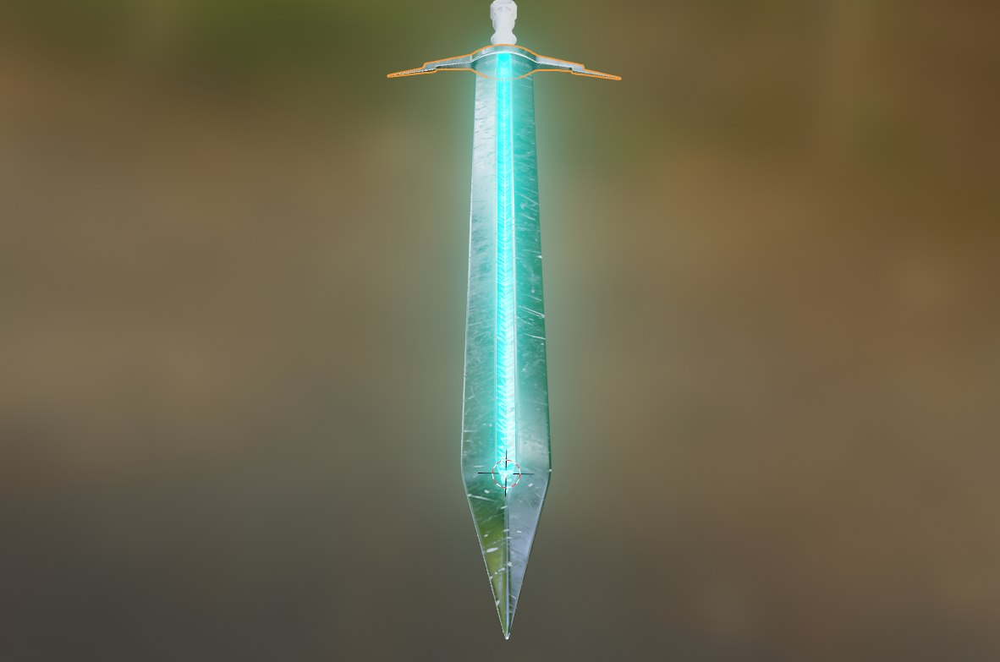

I have a passion for 3D modeling, which allows me to bring my creative ideas to life. I enjoy creating models for various projects using Blender.
Tools I Use
Blender: I primarily use Blender for creating and animating 3D models. It's a versatile tool that supports a wide range of features.
Projects I've Worked On
Project 1: Donut
This project involved creating a realistic donut model, focusing on textures and lighting.
Watch My Donut Project
Project 2: Sword
In this project, I designed a detailed sword model, experimenting with different shapes and materials.
Screenshots of My Sword Project

My Goals in 3D Modeling
My goal is to improve my skills continuously and to create more complex models. I aspire to work on projects that challenge my creativity and technical abilities.